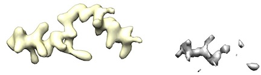
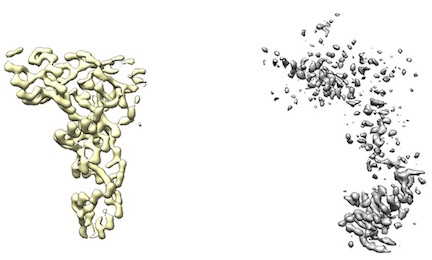

cryo_fit2 is under active development.
Therefore, consider to use cryo_fit1 instead (especially for RNA modeling).
This tutorial will show you how to fit biomolecule atomic structures into cryo-EM maps using dynamics simulation with PHENIX commandline
- The <initial_model> is a guide or template structure (.cif/mmCIF/.pdb) that is close to a <target_map> (.ccp4/.map) structurally.
- A user can use map_to_model to build the atomic model.
- A user can use either dock_in_map or UCSF chimera (Tools->Volume Data->Fit in Map) to roughly place the model into a map.
- The <target_map> should have decent density.
- Most mrc type cryo-EM maps have decent density.
- However, some maps (like from UCSF Chimera's map segmentation) have low density. Therefore, cryo_fit2 will have just little incentive to fit to it.
For example, left yellow maps ares fine. However, right gray/white maps lack enough density to run.


- To fit into these low density maps, Doo Nam tried very high map_weights (like 10^8). However, these efforts either broke atomistic model geometries or did not budge the atomistic model.
At command line:
% phenix.cryo_fit2 <initial_model> <target_map> <map resolution in Angstrom>
For example:
% phenix.cryo_fit2 model.pdb map.ccp4 3.5
Tutorial command:
% Go to <user phenix>/modules/cryo_fit2/tutorial % source run_me.sh %% (run_me.sh is phenix.cryo_fit2 input/tutorial_cryo_fit2_model.pdb input/tutorial_cryo_fit2_map.ccp4 resolution=4)
If a user specified geometry file is small, then simply copy/modify <user phenix>/modules/cryo_fit2/tutorial/eff_file_template/user_custom_geom.eff, and modify it for a user's need.
If a user specified geometry file is large, then run:
% phenix.cryo_fit2 <initial_model> <target_map> <map resolution in Angstrom> <write_custom_geom_only=True> <HE_angle_sigma_scale> <HE_sigma> <parallelity_sigma>For example:
% phenix.cryo_fit2 model.pdb map.ccp4 3.5 write_custom_geom_only=True HE_angle_sigma_scale=0.04 HE_sigma=0.2 parallelity_sigma=0.02Then, automatically generated geometry file should be generated at the same folder.
Modify it for a user's need.
Other than write_custom_geom_only, all parameters are optional (if a user didn't specify these, cryo_fit2 will use default values).
Once a user generated an eff file (by any method), then provide it to cryo_fit2 like:
% phenix.cryo_fit2 <initial_model> <target_map> <map resolution in Angstrom> <eff file>
For example:
% phenix.cryo_fit2 model.pdb map.ccp4 3.5 user_custom_geom.eff
A final cryo_fitted structure: output/cryo_fit2_fitted.pdb
In pymol commandline:
% load ./user_map.ccp4, map1, 1 , ccp4
% isomesh mesh1, map1, 1.5, (all), 0, 1, 3.0
% cmd.color("blue","mesh1")
Otherwise, use pymol GUI:
% A (action) -> Mesh -> @ Level 3.0
See the cryo_fit2 FAQ
All options will be used as default if unspecified. e.g. secondary_structure_enabled =True
| Option | Default value | Description of inputs and uses |
| resolution | none | A cryo-EM map resolution (angstrom) It needs to be specified by a user. |
| explore | False | If True, cryo_fit2 will use maximum number of multiple cores to explore the most optimal MD parameters. However, this exploration requires a lot of computing power (e.g. > 128 GB memory, > 20 cores). Exploring at a macbook pro (16 GB memory, 2 cores) crashed |
| start_temperature | 300 | Start temperature (Kelvin) for molecular dynamics simulation |
| final_temperature | 0 | Final temperature (Kelvin) for molecular dynamics simulation |
| MD_in_each_cycle | 4 | Cycle is each iteration of MD from start_temperature to final_temperature. |
| number_of_steps | 100 | Number of MD simulation steps at each temperature |
| map_weight | (automatically optimized) | A weight toward cryo-EM map |
| map_weight_multiply | 1 | Cryo_fit2 will multiply cryo-EM map weight by this much. Usually when the initial atomistic model has evenly distributed map fitting need, 1 is enough. On the other hand, when the initial atomistic model has un-even distribution of map fitting need, high value (~15) is required. |
| secondary_structure.en abled | True | Most MD simulations tend to break secondary structure. Therefore, turning on this option is recommended. If HELIX/SHEET records are present in supplied .pdb file, automatic search of the existing secondary structures in the given input pdb file will not be executed. |
| secondary_structure.pr otein.remove_outliers | True | False may be useful for very poor low-resolution structures by ignoring some hydrogen "bond" if it exceed certain distance threshold |
| output_dir | output | Output folder name prefix |
| keep_progress_on_screen | True | If True, temp=xx dist_moved=xx angles=xx bonds=xx is shown on screen rather than cryo_fit2.log |
| keep_origin | True | If True, write out model with origin in original location. If False, shift map origin to (0,0,0) |